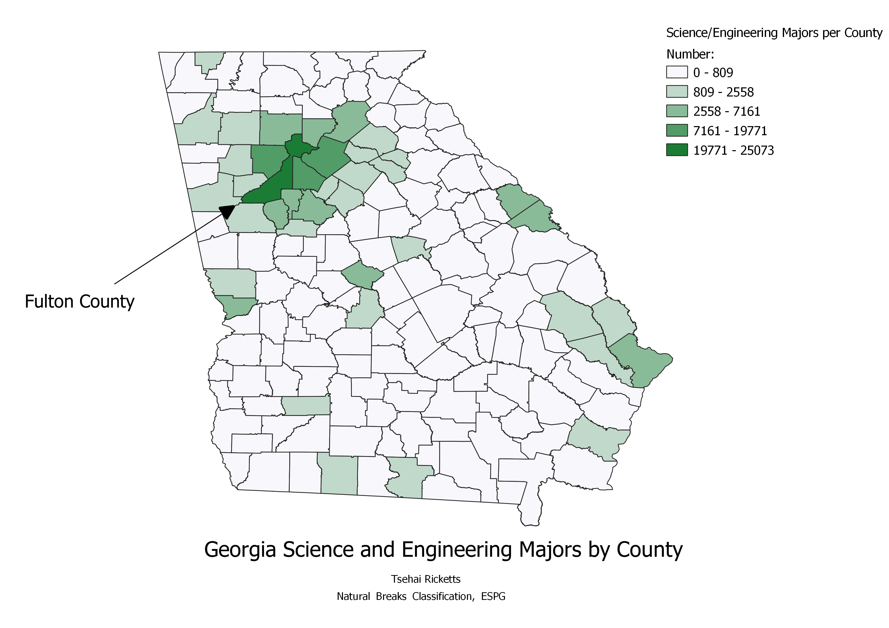

Homework 6: Census data choropleth
This map depicts focuses on data from the education area of the census. More specifically, the map shows the number of science or engeneering majors in each county. The number of these majors does seem to relate to population, as the counties with the highest number of people also have the highest number of science and engeneering majors. However, this may also be related to where colleges and universities are located in the area. For example, the high concentation of these majors around Fulton County is most likely connected to the fact the Georgia Tech is located in the area, and many majors remain in the area following graduation.

Data used for this project
Link to cleaned csv dataset on GitHub
Link to geoJSON on GitHub